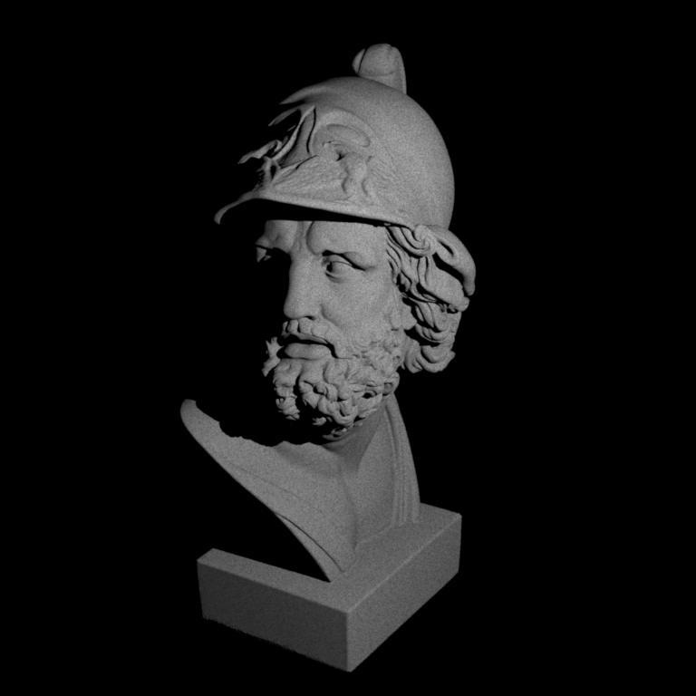
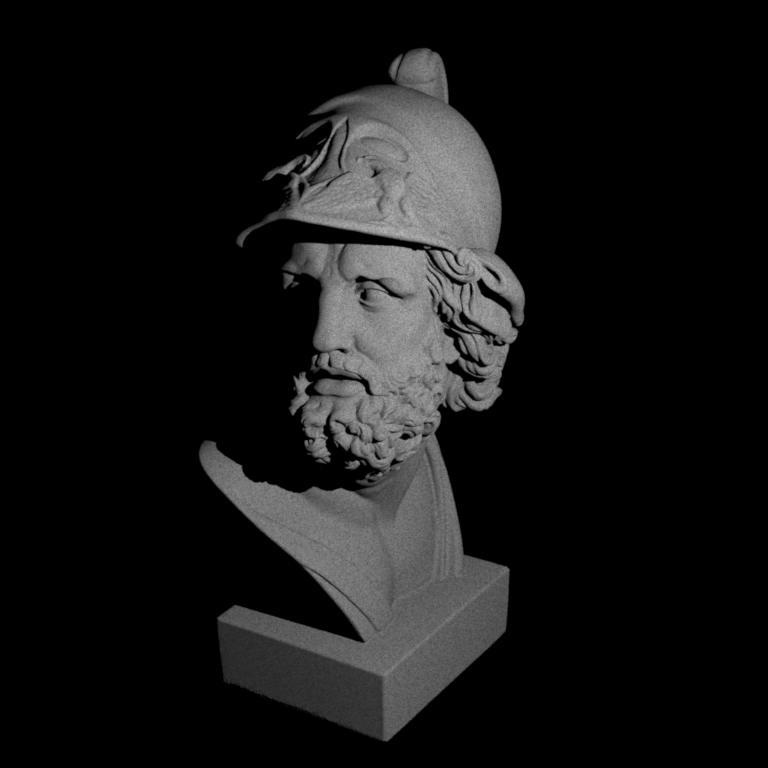
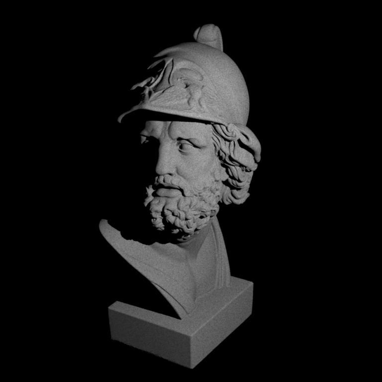

**Homework 3**
Student name: Virginie Piskin
Sciper number: 300542
Disclaimer
=============================
I updated the repo on Saturday but the homework 4 was out, therefore I am experiencing issues with the build on Travis:
Passed 6 / 11 tests.
Failed tests:
pa4/tests/test-mesh.xml
pa4/tests/test-mesh-furnace.xml
build/warptest beckmann 0.05
build/warptest beckmann 0.1
build/warptest beckmann 0.3
The command "cd .. && python run_tests.py" exited with 1.
Also, it appears that my implementation of Beckmann isn't working properly and this is also causing the build to fail.
I wasn't able to fix these issues and make the build on Travis work, I apologize for that. Please let me know what I should do for next time.
(Update: I commented the corresponding lines in run_tests.py so that the build can work).
Monte Carlo Sampling (60 pts)
=============================
For the disk, sphere, uniform and cosine hemisphere I used the information and the code provided by the online book BPRT (specifically this page this page ) and the slides of course about Light.
Tent
----
You will find details about the integration and the inversion below.
Uniform disk
------------
Uniform sphere
--------------
Uniform hemisphere
------------------
Cosine hemisphere
-----------------
Beckmann distribution
---------------------
You will find details about the integration and the inversion below.
Two simple rendering algorithms (40 pts)
========================================
Point lights
------------
This rendering function doesn't work properly. I am suspecting that the issue comes from the way I am making the ShadowRay queries.
I think I didn't really understand how to make the query in the correct ray direction. Therefore, we can see in the resulting image that areas which should be shaded are appearing clear.
Ajax bust illuminated by a point light source:

Ambient occlusion
-----------------
I had the same issue here, I didn't quite understand how to make the query in the direction of w.
Ajax bust rendered using ambient occlusion:
Feedback
========
We would appreciate any comments or criticism to improve the projects in future years--naturally, this part will not be graded. Examples of information that is useful to us includes:
* How much time did you spend on the assignment? How was it divided between designing, coding, and testing? Around 4 days. Late again, I apologize.
* What advice should we have given you before you started? Not fear that the homework is going to be hard and start as soon as possible. In the end, I think this assignement was actually easier to do/understand that the homework 2.
* What was hard or surprising about the assignment? I didn't quite understand some details in the integration, especially when changing the parametrization. Also I wasn't able to make the ShadowRay queries properly.
* What did you like or dislike? What else would you change? Have the lab session earlier in the week to avoid getting stuck.


 
